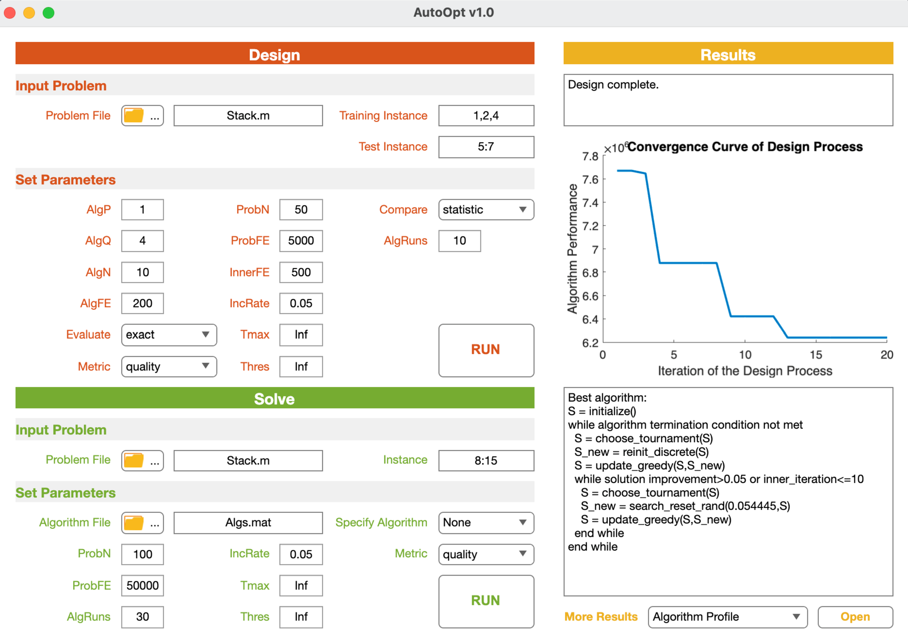

2.3 Use AutoOptLib
Following the three steps below to use AutoOptLib:
2.3.1 Implement Problem
AutoOptLib supports implementing the target problem in Matlab and Python. More formats will be supported in future versions.
Implement in Matlab
Users can implement their target optimization problem according to the template prob_template.m
in the /Problems folder. prob_template.m has three main cases. Case ‘construct’ is for setting
problem properties and loading the input data. In particular, line 7 defines the problem type, e.g.,
Problem.type = {‘continuous’,‘static’,‘certain’} refers to a continuous static problem without uncertainty in the objective function. Lines 10 and 11 define the lower and upper bounds of the
solution space. Lines 18 and 21 offer specific settings as indicated in the comments of lines 14-17 and
20, respectively. Line 25 or 26 is for loading the input data. As a result, problem proprieties and data
are saved in the Problem and Data structs, respectively.
case 'construct' % define problem properties
Problem = varargin{1};
% define problem type in the following three cells.
% first cell : 'continuous'\'discrete'\'permutation'
% second cell: 'static'\'sequential'
% third cell : 'certain'\'uncertain'
Problem.type = {'','',''};
% define the bound of solution space
lower = []; % 1*D, lower bound of the D-dimension decision space
upper = []; % 1*D, upper bound of the D-dimension decision space
Problem.bound = [lower;upper];
% define specific settings (optional), options:
% 'dec_diff' : elements of the solution should be different w.r.t each other for discrete problems
% 'uncertain_average': averaging the fitness over multiple fitness evaluations for uncertain problems
% 'uncertain_worst' : use the worse fitness among multiple fitness evaluations as the fitness for uncertain problems
Problem.setting = {''}; % put choice(s) into the cell
% set the number of samples for uncertain problems (optional)
Problem.sampleN = [];
output1 = Problem;
% load/construct data file in the following
Data = load(''); % for .mat format
% Data = readmatrix('','Sheet',1); % for .xlsx format
output2 = Data;
Case ‘repair’ is for repairing solutions to keep them feasible, e.g., keeping the solutions within
the box constraint. Lines 2 and 3 input the problem data and solutions (decision variables). Programs
for repairing solutions should be written from line 5. Finally, the repaired solutions will be returned.
case 'repair' % repair solutions
Data = varargin{1};
Decs = varargin{2};
% define methods for repairing solutions in the following
output1 = Decs;
Case ‘evaluate’ is for evaluating solutions’ fitness (objective values penalized by constraint violations). In detail, lines 2 and 3 input the problem data and solutions. The target problem’s objective
function should be written from line 6. Constraint functions should be written from line 8. Constraint
violation can be calculated in line 10 by [JD13]:
where CV(x) is the constraint violation of solution x; ḡj(x) and h̄k(x) are the j th normalized inequality constraint and k th normalized equality constraint, respectively, in which the normalization can be done by dividing the constraint functions by the constant in this constraint present (i.e., for gj(x) ≥ bj , the normalized constraint function becomes ḡj(x) = gj(x) / bj ≥ 0, and similarly h̄k(x) can be normalized equality constraint); the bracket operator ⟨ḡj(x)⟩ returns the negative of ḡj(x), if ḡj(x) < 0 and returns zeros, otherwise. During solution evaluation, accessory (intermediate) data for understanding the solutions may be produced. This can be written from line 12. Finally, the objective values, constraint violations, and accessory data will be returned by lines 13-15.
case 'evaluate' % evaluate solution's fitness
Data = varargin{1}; % load problem data
Decs = varargin{2}; % load the current solution(s)
% define the objective function in the following
% define the inequal constraint(s) in the following, equal constraints should be transformed to inequal ones
% calculate the constraint violation in the following
% collect accessory data for understanding the solutions in the following (optional)
output1 = ; % matrix for saving objective function values
output2 = ; % matrix for saving constraint violation values (optional)
output3 = ; % matrix or cells for saving accessory data (optional), a solution's accessory data should be saved in a row
Examples of problem implementation can be seen in the /Problems/CEC2005 Benchmarks folder. The implementation of a real constrained problem
beamforming.m is given in the /Problems/Real-World/Beanforming folder.
Implement in Python
The Python port expects a callable with the same three-mode interface used by Matlab problems. The callable receives a list of problem descriptors, a list of instance indices (or decision vectors when evaluating), and a mode string. A minimal example is shown below; save it as myproblem.py and import the callable when running AutoOptLib from Python.
import numpy as np
def sphere_problem(problems, instances, mode):
mode = str(mode).lower()
if mode == "construct":
# instances store the dimensionality here
for prob, dim in zip(problems, instances):
d = int(dim)
prob.type = ["continuous", "static", "certain"]
prob.bound = np.array([[-5.0] * d, [5.0] * d], dtype=float)
def _evaluate(_data, dec):
decs = np.asarray(dec, dtype=float)
obj = np.sum(decs ** 2, axis=1, keepdims=True)
con = np.zeros_like(obj)
return obj, con, None
prob.evaluate = _evaluate
data = [None for _ in instances]
return problems, data, None
if mode == "repair":
# no repair needed for this unconstrained sphere example
return instances, None, None
if mode == "evaluate":
# instances now carry decision vectors
decs = np.asarray(instances, dtype=float)
obj = np.sum(decs ** 2, axis=1, keepdims=True)
con = np.zeros_like(obj)
return obj, con, None
raise ValueError(f"Unsupported mode: {mode}")
This callable can be passed directly as Problem=sphere_problem when using the Python API.
2.3.2 Define Design Space
AutoOptLib provides over 40 widely-used algorithmic components for designing algorithms for continuous, discrete, and permutation problems. Each component is packaged in an independent .m file in the /Components folder. The included components are listed in Table 1.
The default design space for each type of problems covers all the involved components for this type.
Users can either employ the default space or define a narrow space in Space.m in the /Utilities folder according to interest. For example, when designing algorithms for continuous problems, the candidate Search components can be set by collecting the
string of component file name in line 3. More components can be added, which will be detailed in
Section 3.1.
case 'continuous'
Choose = {'choose_traverse';'choose_tournament';'choose_roulette_wheel';'choose_brainstorm';'choose_nich'};
Search = {'search_pso';'search_de_current';'search_de_current_best';'search_de_random';'cross_arithmetic';'cross_sim_binary';'cross_point_one';'cross_point_two';'cross_point_uniform';'search_mu_gaussian';'search_mu_cauchy';'search_mu_polynomial';'search_mu_uniform';'search_eda';'search_cma';'reinit_continuous'};
Update = {'update_greedy';'update_round_robin';'update_pairwise';'update_always';'update_simulated_annealing'};
case 'discrete'
Choose = {'choose_traverse';'choose_tournament';'choose_roulette_wheel';'choose_nich'};
Search = {'cross_point_one';'cross_point_two';'cross_point_uniform';'search_reset_one';'search_reset_rand';'reinit_discrete'};
Update = {'update_greedy';'update_round_robin';'update_pairwise';'update_always';'update_simulated_annealing'};
case 'permutation'
Choose = {'choose_traverse';'choose_tournament';'choose_roulette_wheel';'choose_nich'};
Search = {'cross_order_two';'cross_order_n';'search_swap';'search_swap_multi';'search_scramble';'search_insert';'reinit_permutation'};
Update = {'update_greedy';'update_round_robin';'update_pairwise';'update_always';'update_simulated_annealing'};
2.3.3 Run AutoOptLib
Users can run AutoOptLib either by Matlab command or GUI.
Run by Command:
Users can run AutoOptLib by typing the following command in MATLAB command window:
where name and value refer to the input parameter’s name and value, respectively. The parameters
are introduced in Table 4. In particular, parameters *Metric and Evaluate define the design objective
and algorithm performance evaluation method, respectively. They are summarized in Table 2
and Table 3, respectively.
Parameters Problem, InstanceTrain, InstanceTest, and Mode are mandatory to input into the
command. For other parameters, users can either use their default values without input to the
command or input by themselves for sophisticated functionality. The default parameter values can
be seen in AutoOpt.m. As an example, AutoOpt(‘Mode’, ‘design’, ‘Problem’, ‘CEC2005 f1’, ‘InstanceTrain’, [1,2], ‘InstanceTest’, 3, ‘Metric’, ‘quality’) is for designing algorithms
with the best solution quality on the CEC2005 f1 problem.
There are also conditional parameters when certain options of the main parameters are chosen.
For example, setting Metric to runtimeFE incurs conditional parameter Thres to define the algorithm
performance threshold for counting the runtime. All conditional parameters have default values and
are unnecessary to set in the command.
After AutoOptLib running terminates, results will be saved as follows:
If running the
designmode,The designed algorithms’ graph representations, phenotypes, parameter values, and performance will be saved as
.mattable in the root dictionary. Algorithms in the.mattable can later be called by thesolvemode to apply to solve the target problem or make experimental comparisons with other algorithms.A report of the designed algorithms’ pseudocode and performance will be saved as
.csvtable. Users can read, analyze, and compare the algorithms through the report.The convergence curve of the design process (algorithms’ performance versus the iteration of design) will be depicted and saved as
.figfigure. Users can visually analyze the design process and compare different design techniques through the figure.
If running the
solvemode,Solutions to the target problem will be saved as
.mattable and.csvtable.Convergence curves of the problem-solving process (solution quality versus algorithm execution) will be plotted in
.figfigure.
Python: solving with a built-in algorithm
Below is a minimal Python example for solving a problem with a built-in algorithm; save it as examples/solve_demo.py and run python examples/solve_demo.py:
from autooptlib import autoopt
best_runs, all_runs = autoopt(
Mode="solve",
Problem="cec2013_f1",
InstanceSolve=[10],
AlgName="Continuous Random Search",
AlgRuns=1,
ProbN=30,
ProbFE=2000,
Metric="quality",
)
print("Best fitness:", best_runs[0][0].fit)
Run by GUI:

The GUI can be invoked by the command AutoOpt() without inputting parameters. It is shown in Figure 5. The GUI has three panels, i.e., Design, Solve, and Results:
The Design panel is for designing algorithms for a target problem. It has two subpanels, i.e., Input Problem and Set Parameters:
Users should load the function of their target problem and set the indexes of training and test instances in the Input Problem subpanel.
Users can set the main and conditional parameters related to the design in the Set Parameters subpanel. All parameters have default values for non-expert users’ convenience. The objective of design, the method for comparing the designed algorithms, and the method for evaluating the algorithms can be chosen by the pop-up menus of the Metric, Compare, and Evaluate fields, respectively.
After setting the problem and parameters, users can start the run by clicking the RUN bottom.
When the running starts, warnings and corresponding solutions to incorrect uses (if any) will be displayed in the text area at the top of the Results panel. The real-time stage and progress of the run will also be shown in the area. After the run terminates, results will be saved in the same format as done by running by commands. Results will also be displayed on the GUI as follows:
The convergence curve of the design process will be plotted in the axes area of the Results panel.
The pseudocode of the best algorithm found during the run will be written in the text area below the axes, as shown in Figure 5.
Users can use the pop-up menu at the bottom of the Results panel to export more results, e.g., other algorithms found during the run, and detailed performance of the algorithms on different problem instances.
The Solve panel is for solving the target problem by an algorithm. It follows a similar scheme to the Design panel. In particular, users can load an algorithm designed by AutoOptLib in the Algorithm File field to solve the target problem. Alternatively, users can choose a classic algorithm as a comparison baseline through the pop-up menu of the Specify Algorithm field. AutoOptLib now provides 17 classic metaheuristic algorithms in the menu. After the problemsolving terminates, the convergence curve and best solutions will be displayed in the axes and table areas of the Results panel, respectively; detailed results can be exported by the pop-up menu at the bottom.
| Parameter | Type | Description |
|---|---|---|
| Parameters related to the target problem | - | - |
| Problem | character string | Function of the target problem |
| InstanceTrain | positive integer | Indexes of training instances of the target problem |
| InstanceTest | positive integer | Indexes of test instances of the target problem |
| Parameters related to the designed algorithms | - | - |
| Mode | character string | Run mode. Options: design - design algorithms for the target problem, solve - solve the target problem by a designed algorithm or an existing algorithm. |
| AlgP | positive integer | Number of search pathways in a designed algorithm |
| AlgQ | positive integer | Maximum number of search operators in a search pathway |
| Archive | character string | Name of the archive(s) that will be used in the designed algorithms |
| LSRange | $[0,1]$ real number | Range of inner parameter values that make the component perform local search[^*]. |
| IncRate | $[0,1]$ real number | Minimum rate of solutions' fitness improvement during 3 consecutive iterations |
| InnerFE | positive integer | Maximum number of function evaluations for each call of local search |
| Parameters controlling the design process | - | - |
| AlgN | positive integer | Number of algorithms to be designed |
| AlgRuns | positive integer | Number of algorithm runs on each problem instance |
| ProbN | positive integer | Population size of the designed algorithms on the target problem instances |
| ProbFE | positive integer | Number of fitness evaluations of the designed algorithms on the target problem instances |
| Metric | character string | Metric for evaluating algorithms' performance (the objective of design). Options: quality, runtimeFE, runtimeSec, auc. |
| Evaluate | character string | Method for evaluating algorithms' performance. Options: exact, intensification, racing, surrogate. |
| Compare | character string | Method for comparing the performance of algorithms. Options: average, statistic |
| AlgFE | positive integer | Maximum number of algorithm evaluations during the design process (termination condition of the design process) |
| Tmax | positive integer | Maximum running time measured by the number of function evaluations or wall clock time |
| Thres | real number | The lowest acceptable performance of the designed algorithms. The performance can be solution quality. |
| RacingK | positive integer | Number of instances evaluated before the first round of racing |
| Surro | real number | Number of exact performance evaluations when using surrogate |
| Parameters related to solving the target problem | - | - |
| Alg | character string | Algorithm file name, e.g., Algs |
[^*]: Some search operators have inner parameters to control performing global or local search. For example, a large mutation probability of the uniform mutation operator indicates a global search, while a small probability indicates a local search over neighborhood region. As an example, in cases with LSRange=0.2, the uniform mutation with probability lower than 0.2 is regarded as performing local search, and the probability equals or higher than 0.2 performs global search.